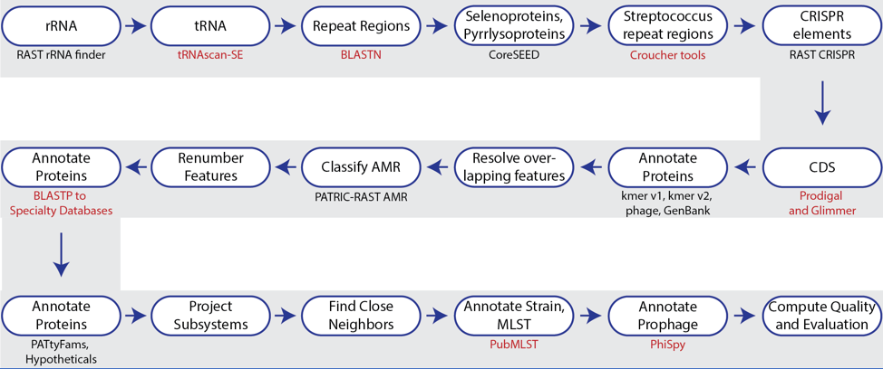
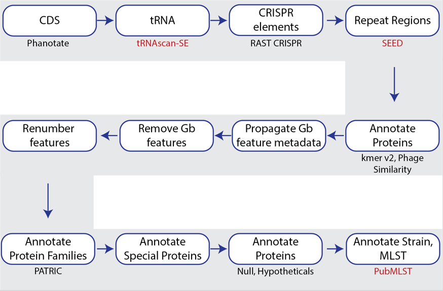

Genome Annotation Protocol¶
Genome annotation is the process of identifying functional elements along the sequence of a genome. The Genome Annotation Service in BV-BRC uses the RAST tool kit (RASTtk)[1] to annotate genomic features in bacteria, the Viral Genome ORF Reader (VIGOR4)[2] to annotate viruses, and PHANOTATE[3,4] to annotate bacteriophages. All public genomes in BV-BRC have been consistently annotated with these services. Researchers can also submit their own private genome to the annotation service, where it will be deposited into their private workspace for their perusal and comparison with other BV-BRC genomes using BV-BRC analysis tools and services, e.g., Phylogenetic Tree, Genome Alignment, Protein Family Sorter, Comparative Pathway Viewer, Similar Genome Finder.
RAST Annotation of Bacteria and Archaea¶
In 2008, the RAST server (Rapid Annotation using Subsystem Technology) was developed to annotate microbial genomes1. It works by projecting manually curated gene annotations from the SEED database onto newly submitted genomes[5,6]. The key to the consistency and accuracy of the RAST algorithm has been the carefully structured annotation data in the SEED, which are organized into subsystems (sets of logically related functional roles)[5]. RAST has become one of the most popular sources for consistent and accurate annotations for microbial genomes.

Figure 1. Steps in the Bacteria/Archaea annotation pipeline using RASTtk.The annotation service available in BV-BRC (and PATRIC[7])uses a modular, updated version of RAST that is called the RAST toolkit (RASTtk)[8], which is depicted above. It includes algorithms that were developed by the RAST team5 and some that were developed by others and incorporated into the overall pipeline (seen in red in the figure above). tRNAscan-SE[9] is used to call the tRNA genes. BLASTN[10] is used to identify repeat regions within the genome, and tools by Croucher[11] are used to identify Streptococcus repeat regions. After repeat regions are identified, Prodigal[12], followed by Glimmer[13], are used to call coding sequences (CDS). Antimicrobial resistance is projected for a select group of genera based on a Adaboost machine learning[14], followed by an initial protein annotation event that involves taking every protein called in a genome and using BLAT[15] and BLASTP[16] to identify CDSs that have homology to proteins in specialty databases. Possible virulence factors are identified by blasting against a database containing proteins collected from the Virulence Factor Database[17], Violins[18], and a special curation effort by the BV-BRC team[9]. Genes with homology to those identified as being involved in antimicrobial resistance are BLATed against proteins from the Comprehensive Antibiotic Resistance Database (CARD)[19], the National Database of Antibiotic Resistant Organisms (NDARO - https://www.ncbi.nlm.nih.gov/pathogens/antimicrobial-resistance/), the Antibiotic Resistance Database (ARDB)[20] and a special curation of relevant proteins by PATRIC curators[21]. Genes with homology to transporters are identified by searching against proteins from the Transporter Classification Database (TCDB)[22], and those similar to genes that have been identified as potential drug targets by comparison to proteins from DrugBank[23] and the Therapeutic Target Database (TTD)[24]. Protein families[25] are assigned, and then hypotheticals being identified. All proteins are then mapped to subsystems[5,6]. PubMLST (www.pubmlst.org) is used to assign sequence types, and then PhiSpy[26] is used to find prophages in bacterial genomes.
The source code for RASTtk is available on Github (https://github.com/SEEDtk/RASTtk).
VIGOR4 Annotation of Viruses¶
VIGOR4 (Viral Genome ORF Reader) is a Java application to predict protein sequences encoded in viral genomes developed by the J Craig Venter Institute (JCVI). VIGOR4 determines the protein coding sequences by sequence similarity searching against curated viral protein databases. VIGOR4 uses the VIGOR_DB project which currently has databases for the following viruses:
Influenza (A & B for human, avian, and swine, and C for human)
SARS-CoV-2
West Nile Virus
Zika Virus
Chikungunya Virus
Eastern Equine Encephalitis Virus
Respiratory Syncytial Virus
Rotavirus
Enterovirus
Lassa Mammarenavirus
For other viruses, the original GenBank annotations are propagated. The source code for VIGOR4 is available on GitHub (https://github.com/JCVenterInstitute/VIGOR4).
PHANOTATE Annotation of Bacteriophages¶
BV-BRC also provides a bacteriophage genome annotation pipeline(PHANOTATE)[3,4], depicted below. Use of this pipeline opens up the same tools to bacteriophage researchers that bacteria/archaea researchers can use. The source code for PHANOTATE is available on GitHub (https://github.com/deprekate/PHANOTATE).

Figure 1b. Steps in the bacteriophage annotation pipeline using PHANOTATE.References¶
Aziz, R. K. et al. The RAST Server: rapid annotations using subsystems technology. BMC genomics 9, 75 (2008).
https://github.com/JCVenterInstitute/VIGOR4.
McNair, K. et al. in Bacteriophages 231-238 (Springer, 2018).
McNair, K., Zhou, C., Dinsdale, E. A., Souza, B. & Edwards, R. A. PHANOTATE: a novel approach to gene identification in phage genomes. Bioinformatics 35, 4537-4542 (2019).
Overbeek, R. et al. The subsystems approach to genome annotation and its use in the project to annotate 1000 genomes. Nucleic acids research 33, 5691-5702 (2005).
Overbeek, R. et al. The SEED and the Rapid Annotation of microbial genomes using Subsystems Technology (RAST). 42, D206-D214 (2013).
Davis, J. J. et al. The PATRIC Bioinformatics Resource Center: expanding data and analysis capabilities. Nucleic acids research 48, D606-D612 (2020).
Brettin, T. et al. RASTtk: a modular and extensible implementation of the RAST algorithm for building custom annotation pipelines and annotating batches of genomes. Scientific reports 5, 8365 (2015).
Mao, C. et al. Curation, integration and visualization of bacterial virulence factors in PATRIC. Bioinformatics 31, 252-258 (2015).
Ye, J., McGinnis, S. & Madden, T. L. BLAST: improvements for better sequence analysis. Nucleic acids research 34, W6-W9 (2006).
Croucher, N. J., Vernikos, G. S., Parkhill, J. & Bentley, S. D. Identification, variation and transcription of pneumococcal repeat sequences. BMC genomics 12, 1-13 (2011).
Hyatt, D. et al. Prodigal: prokaryotic gene recognition and translation initiation site identification. BMC bioinformatics 11, 1-11 (2010).
Delcher, A. L., Bratke, K. A., Powers, E. C. & Salzberg, S. L. Identifying bacterial genes and endosymbiont DNA with Glimmer. Bioinformatics 23, 673-679 (2007).
Davis, J. J. et al. Antimicrobial resistance prediction in PATRIC and RAST. Scientific reports 6, 27930 (2016).
Kent, W. J. BLAT—the BLAST-like alignment tool. Genome research 12, 656-664 (2002).
Johnson, M. et al. NCBI BLAST: a better web interface. Nucleic acids research 36, W5-W9 (2008).
Liu, B., Zheng, D., Jin, Q., Chen, L. & Yang, J. VFDB 2019: a comparative pathogenomic platform with an interactive web interface. Nucleic acids research 47, D687-D692 (2019).
Xiang, Z. et al. VIOLIN: vaccine investigation and online information network. Nucleic acids research 36, D923-D928 (2007).
Alcock, B. P. et al. CARD 2020: antibiotic resistome surveillance with the comprehensive antibiotic resistance database. Nucleic acids research 48, D517-D525 (2020).
Liu, B. & Pop, M. ARDB—antibiotic resistance genes database. Nucleic acids research 37, D443-D447 (2009).
Antonopoulos, D. A. et al. PATRIC as a unique resource for studying antimicrobial resistance. Briefings in bioinformatics (2017).
Saier Jr, M. H. et al. The transporter classification database (TCDB): recent advances. Nucleic acids research 44, D372-D379 (2016).
Wishart, D. S. et al. DrugBank 5.0: a major update to the DrugBank database for 2018. Nucleic acids research 46, D1074-D1082 (2018).
Chen, X., Ji, Z. L. & Chen, Y. Z. TTD: therapeutic target database. Nucleic acids research 30, 412-415 (2002).
Davis, J. J. et al. PATtyFams: Protein families for the microbial genomes in the PATRIC database. 7, 118 (2016).
Akhter, S., Aziz, R. K. & Edwards, R. A. PhiSpy: a novel algorithm for finding prophages in bacterial genomes that combines similarity-and composition-based strategies. Nucleic acids research 40, e126-e126 (2012).